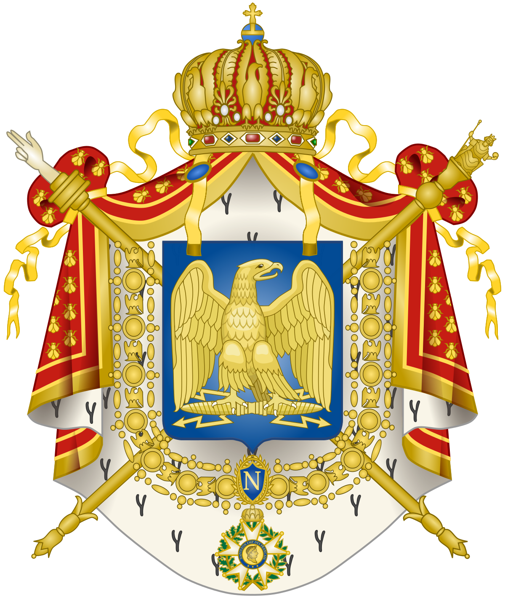

 TACTICS
Content
"Waterloo" -1970
“What are the conditions that make for the superiority of an army? Its internal organization, military habits in officers and men, the confidence of each in themselves; that is to say, bravery, patience, and all that is contained in the idea of moral means.” ― Napoleon Bonaparte
The Tactics of the Napoleonic Wars
Line Infantry
The Core of an Army: Infantry
The core of any army comprises of infantry. The infantry is formed out of many lines of men which would march in column and fire volleys into the enemy. The infantry consisted of line infantry, skirmishers, and grenadiers.
Line infantry were armed with smothe bore muskets and would form into lines and fire volleys into the enemy. Forming into lines helps commanders order their troops and improves morale. Due to the innacuraccy of smothe bore muskets, troops had to fire in volley to maximize fire and reduce the morale of the enemy.
The formation of the army would change based on the circumstances of combat. When troops were moving, they would form one large column which would maximize their speed. However, artillery would cut holes through the lines of the column, and they could not maximize fire or protect themselves against enemy troops. When troops would arrive at the line of contanct they would form lines, which maximizes the firepower of the army and protects them the most against enemy artillery. However, this left them vulnerable to cavalry. Before a cavalry attack, troops would protect themselves and form a square. Cavalry will never charge a wall of men armed with bayonets.
Famous Battles Napoleon Faught:
Artillery
Artillery can break the enemy from afar. One of the main components of any army would be the artillery. Consisting of 12 man teams that would clean, prime, and load cannons. Cannon sizes would be named after the weight of the ammunition held, anywhere from 2lb lightening artillery to 30lb siege cannons.
Artillery did not always consist of cannon, instead it may mean congreve rockets, mortars, or other forms of munitions that would be used to break the enemy from afar. Typically, artillery would be positioned in high areas overlooking the battlefield and at specific locations that were considered advantageous. Sometimes if the terrain permitted it, a grand battery would be erected, with a hundred guns in a line firing at a specific target. When the artillery were threatened with an attack, troops would load cannister, or "grape" shot to break the enemy's advance.
When troops would capture artillery, or if the artillery gunmen had to retreat, soldiers would "spike" the guns. Spoons, forks, and other metal would be plugged into the hole of the cannon to prevent it from being used for the rest of the battle.

Cannon Sizes
"Scotland Forever!" by Lady Butler
Cavalry
Cavalry can react to the events of a quickly changing battle. Cavalry can be used to charge in and break an enemy, harass enemy troops and supplies, and route fleeing units from the battlefield. Cavalry can also be used as scouts, messangers, and are useful for protecting the flanks of an army.
Cavalry comes in many variaties. Light cavalry, dragoons, heavy cavalry, and lancers. Light cavalry is used to scout, send messages, and harass the enemy. Dragoons were line infantry on horseback, and would be used to ride in and fire at an enemy, or to dismount and form a line behind the enemy. Heavy cavalry (Cuirassiers) were better suited for fighting on horseback as they had better armor and weapons. The name Cuirassiers comes from the type of armor they wore- called a "Cuirass". They would be tasked with fighting enemy cavalry or to charge in and defeat the enemy. Lastly, there are lancers, which were cavalary armed with lances which were highly effective against enemy cavalry due to the long range they had.